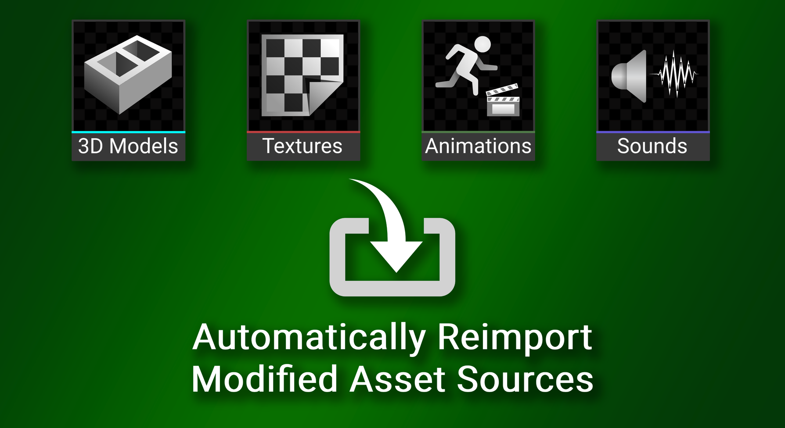
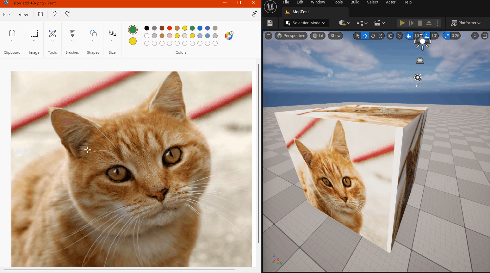
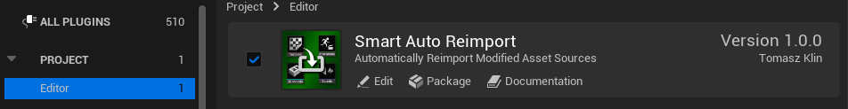
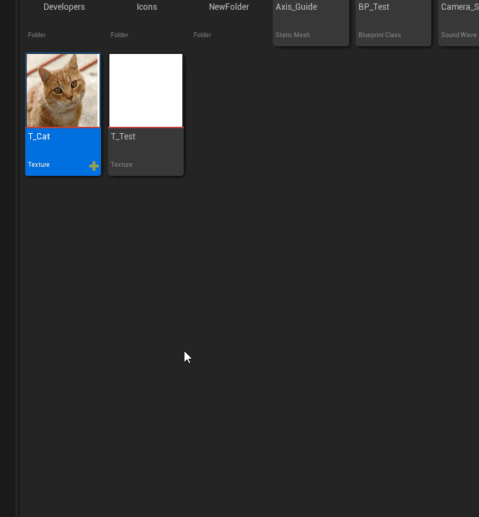
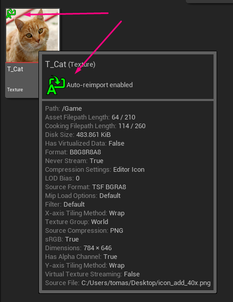

This plugin has been created with asset creators in mind, who frequently check the results of their work in the game engine. Thanks to this plugin, the reimporting process occurs automatically, saving you time. Additionally, it allows you to treat the editor's window as an asset preview. You don't need to leave your asset creation program; just export the asset to the same location from which it was previously imported, and this plugin will take care of the rest.

In order to enable the plugin go to Edit -> Plugins, select Editor category, and check Enabled for Smart Auto Reimport

Select the assets you want to monitor. In the Content Browser, right-click on the asset and choose "Auto Reimport" from the context menu, and then tick the "Auto Reimport" checkbox.

The monitoring status is displayed in the lower-left corner of the asset icon as well as in the context menu.

From now on, every time the source file of an asset is modified, it will be automatically reimported in the editor.
What types of assets are supported?
All types of assets that can be imported into the editor are supported. This plugin serves as an overlay on the existing reimport functionality, covering all compatible asset types.
Can this plugin be used in Standalone Game mode?
No, the reimporting functionality only works within the editor.
Does the plugin work during Play-In-Editor (PIE) mode?
Yes, but not for all types of assets. Textures and static meshes will be refreshed, while sounds, for example, will not. The plugin's behavior depends on the implementation of the specific assets.
Why isn't the selection of monitored assets retained after restarting the editor?
To avoid certain peculiar use cases that haven't been decided on how to handle yet.
Why don't I see the "Auto Reimport" option?